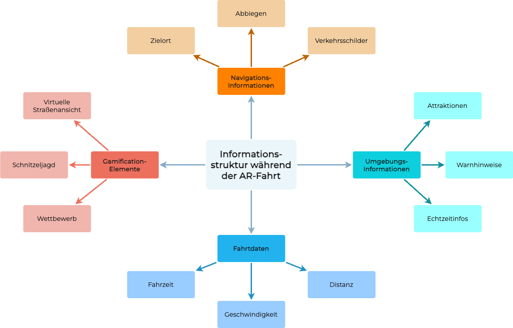
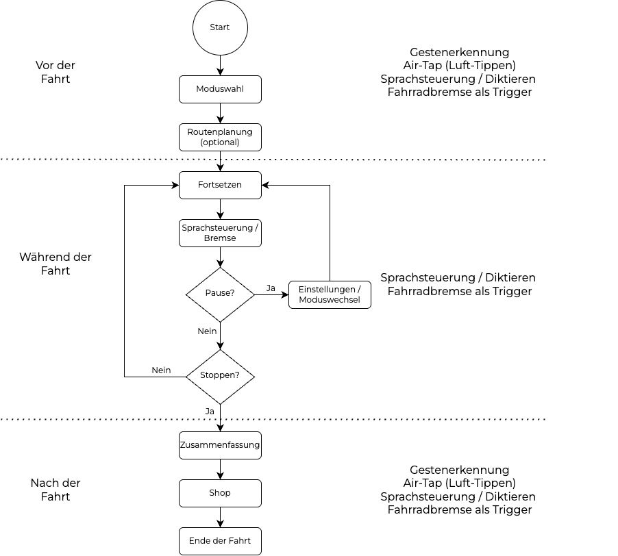
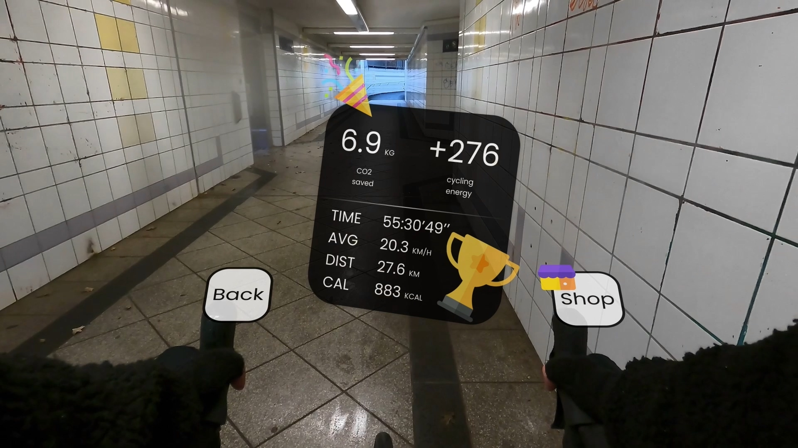
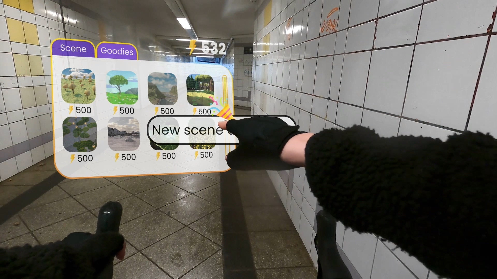
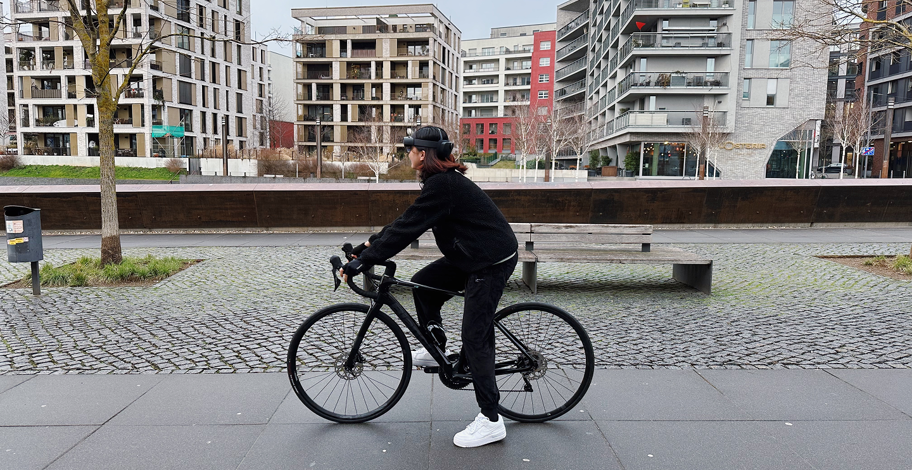

Dieses konzeptionelle Einzelprojekt wurde im Rahmen meines Interaction Design Studiums entwickelt.
Ziel war es, durch die Kombination von AR-Brille und Fahrradsteuerung eine neue Art des Radfahrens zu gestalten: eine, die nicht nur funktional ist, sondern auch spielerisch, immersiv und emotional bereichernd.
Wie kann Augmented Reality das Fahrraderlebnis optimieren – ohne die Sicherheit zu gefährden, und gleichzeitig neue Interaktionsformen schaffen?
Aktuelle Fahrradanwendungen setzen fast ausschließlich auf Smartphones – oder, im Fall von AR/VR, auf stationäre Trainingsgeräte in Innenräumen. Im echten Straßenraum fehlt es an Lösungen, die digitale Informationen körpernah, sicher und fahrflusskompatibel einbinden.
Die Konsequenz: Wer unterwegs digitale Informationen abruft, wechselt ständig zwischen physischer Bewegung und digitalem Interface. Das Fahren wird unterbrochen, die Aufmerksamkeit fragmentiert, das Sicherheitsrisiko steigt.
Daraus ergaben sich zwei zentrale Designfragen:
Um diese Fragen zu beantworten, wurde ein konzeptuelles Informationssystem entwickelt, das vier zentrale Kategorien umfasst:

Die vier Kategorien bilden ein Spektrum von funktionaler Sicherheit bis emotionaler Bereicherung: Navigation und Umgebungsdaten dienen primär der sicheren Orientierung im Straßenraum, Fahrtdaten ermöglichen Selbstreflexion über die eigene Leistung, und Gamification-Elemente schaffen eine zusätzliche Motivationsebene jenseits des reinen Fortkommens.
Diese Unterscheidung ist nicht nur inhaltlich, sondern auch strukturell relevant, denn sie bildet die Grundlage für zwei Erlebnis-Modi, zwischen denen Nutzer auch während der Fahrt wechseln können:

Das Interaktionskonzept orientiert sich an den drei Phasen der Fahrradtour: vor, während und nach der Fahrt:
Diese Einschränkung ist eine bewusste Designentscheidung: In früheren Iterationen wurde auch Gestensteuerung während der Fahrt in Betracht gezogen, jedoch wegen möglicher Fehltrigger und mangelnder Präzision verworfen. Interaktion muss nicht jederzeit maximal möglich sein, sondern muss situativ sinnvoll und sicher sein.
Das Konzeptvideo wurde auf dem Frankfurter Radschnellweg aufgenommen: einer speziell ausgebauten Route, die eine sichere und kontinuierliche Fahrsituation bietet. Es zeigt, wie Informationen im Raum platziert, Modi gewechselt und der Nutzer im Fahrfluss gehalten werden kann.
Doch das Erlebnis endet nicht mit der Fahrt. Am Ende erhalten Nutzer eine personalisierte Zusammenfassung ihrer Tour. Virtuell gesammelte Objekte können genutzt werden, um neue Fahrszenarien freizuschalten oder gegen reale Goodies eingetauscht zu werden. So entsteht ein Motivationskreislauf, der reale Bewegung mit virtuellen Erlebnissen verbindet; und Radfahren in ein emotional aufgeladenes, spielerisches Erlebnis verwandelt.
Die Verbindung von Raum, Rhythmus und Reaktion ist der Kern dieses Konzepts: Radfahren wird nicht unterbrochen, sondern erweitert.


Dieses Projekt war ein konzeptioneller Versuch, digitale Interaktion im Kontext körperlicher Bewegung neu zu denken. Dabei stand weniger die technische Machbarkeit im Vordergrund, sondern die Frage, was Interaktion im Kern ist, wenn sie nicht auf Oberflächen, sondern auf Handlung, Raum und Wahrnehmung basiert.
Die Steuerung wurde bewusst phasenbasiert entwickelt: nicht aus Formalismus, sondern als Antwort auf unterschiedliche kognitive Zustände. Interaktion muss nicht jederzeit möglich sein – sie muss situativ sinnvoll sein.
Ich sehe Augmented Reality nicht als zusätzliches Interface, sondern als potenzielles Werkzeug zur Verstärkung realer Präsenz. Wenn digitale Systeme den Bezug zur Umwelt nicht stören, sondern schärfen. Dann entsteht daraus nicht nur Information, sondern Bedeutung.
Das Konzept ist nicht abgeschlossen. Aber es zeigt eine Haltung: Interaktion beginnt nicht im Interface, sondern im Körper; und endet nicht im Screen, sondern in der Welt.
